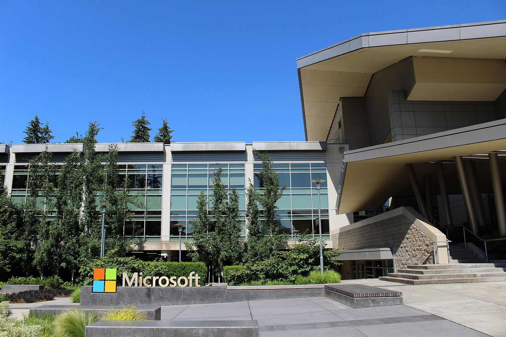

IBM 与微软发布 Imagine Enterprise：面向行业流程的代理平台；IBM Consulting 提供逾 6000 个预置代理与资产，初期覆盖金融服务、保险与零售


IBM 与微软于 2026 年 11 月 10 日在纽约州阿蒙克与华盛顿州雷德蒙德联合宣布 Imagine Enterprise，称之为一套面向企业的代理平台，用于帮助企业构建、运行并治理可协助执行行业特定流程的 AI 代理。新闻稿称，IBM Consulting 贡献其在 IBM Consulting Advantage 交付平台上构建的逾 6000 个预置 AI 代理与资产，以及行业经验；微软则提供 AI、数据、云与安全技术基础。符合条件的项目还可获得两家公司的前线部署工程支持（forward-deployed engineering）。
IBM Consulting 贡献其在 IBM Consulting Advantage 交付平台上构建的逾 6000 个预置 AI 代理与资产，以及行业经验；微软则提供 AI、数据、云与安全技术基础。
平台被概括为三项要点：一是「即时专业能力」，即从已按行业构建的代理与资产起步再做适配；二是「契合现有企业」，即连接企业已有的数据、流程、系统与技术环境，并内置安全、身份、AI 治理与控制；三是「智能倍增」，把 IBM Consulting 运营这批代理的经验与微软技术结合，让人和代理都能调用更丰富的企业知识。支撑技术方面，新闻稿提到 Microsoft Foundry、GitHub Copilot、Microsoft Copilot Studio，以及 Microsoft Fabric、Microsoft 365、Microsoft Entra、Microsoft Purview、Microsoft Defender 与 Microsoft Azure；IBM 一侧则包括 Consulting Advantage 的 Process Studio、Context Studio 与 Advantage Core。
金融科技与资产服务公司 SEI 被作为企业转型案例提及：SEI 正与 IBM Consulting 探索新兴与代理技术，并有微软支持。IBM Consulting 负责人 Mohamad Ali 表示，客户不再只是希望 AI 让人把同样的工作做得稍快一些，而是希望建成「代理型业务」。微软 Frontier Company 总裁 Rodrigo Kede Lima 称，能把数据、行业专长与 AI 变成行动的组织才会在企业 AI 中胜出。行业框架初期包括金融服务、保险与零售，并被设计成可在未来扩展到制造业、能源、公共部门与出行等。客户可通过委托 IBM Consulting 代为部署与运营，或与其共同实施企业级方案；新闻稿也称提供自行管理选项。稿件未公布价格。
来源
摘记，不是官方媒体。预置代理数量、行业范围与客户案例均转述 IBM / 微软新闻稿；新闻稿声明有关未来方向的表述可能变更，且不公布定价。供应方式以官方原文为准。